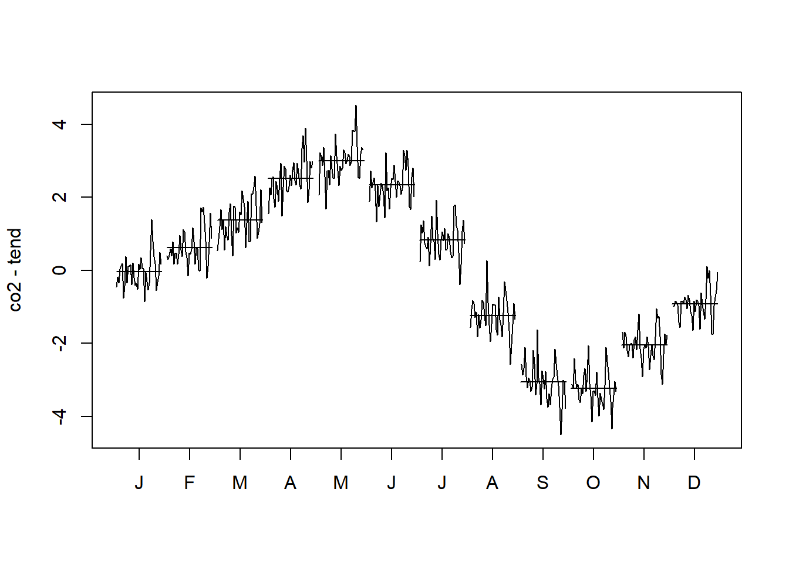
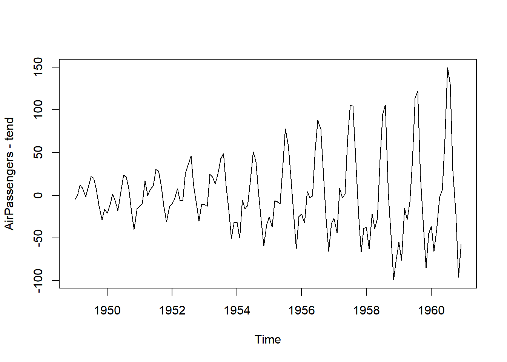
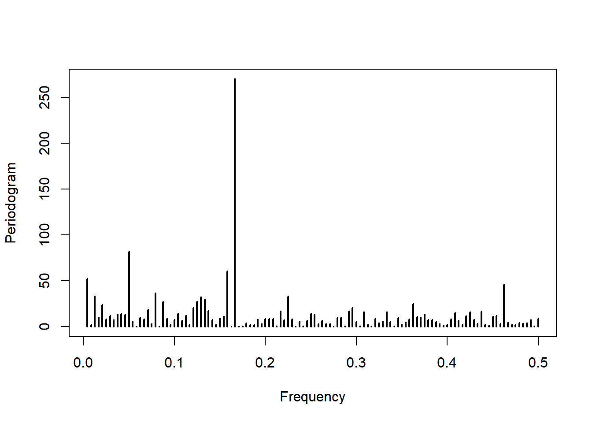
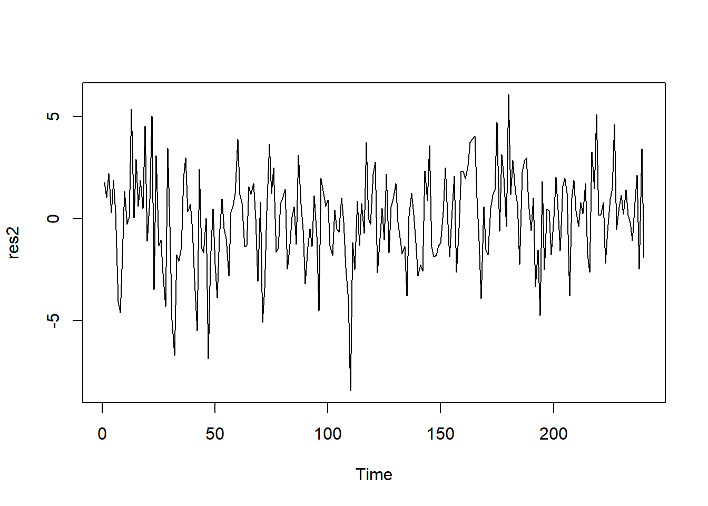

ts.plot(co2)7 Sazonalidade
7.1 Padrão sazonal
Padrões que surgem sistematicamente ao longo do tempo são denominados sazonais. Exemplos: flutuações de temperatura entre estações, início e fim do semestre letivo, Natal, dias úteis, feriados flutuantes como a Páscoa e o Carnaval.
Um padrão sazonal pode ser modelado através de uma função periódica.
Definition 7.1 Dizemos que \(s(.)\) é uma função periódica de período \(p\) se \[s(t)=s(t + kp),\;\forall k=1,2,\ldots.\]
Example 7.1 A função \[s(t)=\left\{ \begin{align} -1, &\;\;t=1,4,7,\ldots\\ 0, &\;\; t=2,5,8,\ldots\\ 1,&\;\;t=3,6,9,\ldots \end{align} \right. \] é periódica e possui período \(p=3\).
Example 7.2 A função \[s(t)=\cos\left(2\pi\frac{t}{4}\right)\] é periódica (com \(p=4\)). De fato, para \(k=1,2,3,\ldots,\) \[\begin{align*} g(t+4k) &= \cos\left(2\pi\frac{t+4k}{4}\right)=\cos\left( \pi\frac{t}{4}+2\pi k\right)\\ &=\cos\left( 2\pi\frac{t}{4}\right)\underbrace{\cos\left(2\pi k\right)}_\text{1} - \sin\left( \pi\frac{t}{4}\right)\underbrace{\sin\left(2\pi k\right)}_\text{0}\\ &=\cos\left(2\pi\frac{t}{4}\right) = g(t). \end{align*}\]
Seja \(s(.)\) uma função periódica. Então, uma série temporal sazonal aditiva é descrita como
\[x_t=s(t)+\varepsilon_t,\] onde \(\varepsilon_t\) é um ruído estacionário.
Atenção. Ao criar um objeto do tipo ts no R, o argumento frequency é considerado o período do padrão sazonal. A maioria das funções voltadas para padrões sazonais acessam essa informação no objeto.
7.2 Gráficos sazonal de subséries
Seja \(x_t\) uma série sazonal de período \(p\). Para construir um gráfico sazonal de subséries:
Faça \(p\) subséries: \[\begin{align*} &x_1,x_{1+p},x_{1+2p},\ldots \\ &x_{2},x_{2+p},x_{2+2p},\ldots\\ &\cdots\\ &x_{p},x_{2p},x_{3p},\ldots\\ \end{align*}\]
Calcule a média de cada subsérie.
Faça um gráfico de cada subsérie, cada um com uma linha horizontal com o valor de sua respectiva média.
Observe que, para um padrão sazonal, a subsérie \[x_{i},x_{i+p},x_{i+2p},\ldots\] é equivalente à \[s(i)+\varepsilon_i,s(i)+\varepsilon_{i+p},s(i)+\varepsilon_{i+2p},\ldots\] e, supondo que \(\varepsilon_t\) é um ruído granco ergódico, teremos que \[\hat{s}(i)=\frac{1}{m+1}\sum_{j=0}^m x_{i+jp}\] onde \(m+1\) é o tamanho da amostra correspodente à subsérie.
No R, o comando monthplot(x) faz o gráfico de subséries. Considerando um padrão sazonal, cada subsérie deve oscilar em torno de uma média constante. Vejamos algus exemplos.
Example 7.3 A série abaixo (gráfico à esquerda) apresenta as temperaturas médias mensais, em Fahrenheits, no Castelo de Nottingham entre 1920 e 1939. O gráfico à direita apresenta o gráfico de subséries. Como a série possui período 12, este último gráfico já identifica cada subsérie com a inicial do mês correspondente. Note que a maioria das subséries oscila em torno da média
ts.plot(nottem)
monthplot(nottem)
\(\blacksquare\)
É possível que a tendência construa uma falta impressão sobre o comportamento sazonal. Portanto, é interessante remover a tendência da série antes de fazer o gráfico das subséries.
Example 7.4 Abaixo apresentamos a série mensal da concentração de CO\(_2\), em partes por milhão, no Mauna Loa. Observe a clara tendência de crescimento e o padrão sazonal.
O gráfico das subséries é dado abaixo. Observe que há uma tendência crescente em cada subsérie.
monthplot(co2)A tendência crescente nas subséries não nos nos permitiria trabalhar com uma função periódica. Contudo o gráfico está sendo influenciado pela tendência. Vamos removê-la e fazer o gráfico novamente.
# estimação da tendência via loess
tempo <- 1 : length(co2)
model <- loess( co2 ~tempo)
tend <- fitted(model)
# série sem tendência e o gráfico de subséries
plot( co2-tend)monthplot(co2-tend)
\(\blacksquare\)
Também é possível que o padrão sazonal não seja bem representado por uma função periódica. Isto ocorre quando o gráfico de subséries possui tendência.
Example 7.5 A Figure fig-AirPassengersMonthplot apresenta o gráfico da série AirPassengers e de suas subséries. Observe que todas as subséries possuem um padrão de crescimento, que deve estar sendo governado pela tendência crescente da série.
ts.plot(AirPassengers)
monthplot(AirPassengers)
Abaixo, vamos estimar a tendência da série e removê-la. Note que o padrão das subséries se altera, mostrando o real comportamento do padrão sazonal: é uma tendência de crescimento nos meses de verão americano (junho, julho e agosto) e um padrão de queda começando em novembro e pegando so três subsequentes meses do inverno.
# estimação da tendência via loess
tempo <- 1 : length(AirPassengers)
model <- loess( AirPassengers ~tempo)
tend <- fitted(model)
# série sem tendência e o gráfico de subséries
plot( AirPassengers-tend)
monthplot(AirPassengers-tend)
\(\blacksquare\)
7.3 Dessazonalização
Existem séries que apresentam tanto tendência quanto sazonalidade. Isso pode dificultar o estudo da tendência, uma vez que a sazonalidade interfere no movimento de subida e descida da série. Nesses casos, é interessante obter uma estimativa da parte sazonal para removê-la da série.
Considere a série \[y_t = T^\star(t)+s^\star(t)+\varepsilon_t,\] onde \(T^\star(t)\) é a tendência e \(s^\star(t)\) uma função periódica, com período igual a \(p\). É sempre verdade que existe uma constante real \(c\) tal que \[\sum_{j=1}^p s^\star(t+j)=c\] para qualquer \(t=0,1,\ldots\). Contudo, note que \(c\) é uma constante (que, por sua vez, faz parte da tendência da série). Fazendo \(T(t)=T^\star(t)+c\) e \(s(t)=s^\star(t)-c\), teremos \[y_t = T^\star(t)+c + s^\star(t)-c+\varepsilon_t=T(t)+ s(t)+\varepsilon_t,\]
e sempre podemos assumir que \[\sum_{t=1}^{p}s(t)=0.\] Isto é equivalente a afirmar que o efeito sazonal desaparece quando as \(p\) observações são agregadas. Deste modo, o estimador para tendência \(p\)-MM estima a tendência sem o efeito sazonal.
Considere novamente a série com o número de óbitos por doenças pulmonares no Reino Unido. A figura abaixo mostra a série original e a tendência, estimada pela 12-MM. Observe o padrão claro de tendência decrescente.
7.4 Decomposições de séries
Em geral, assume-se que a série temporal admite a seguinte decomposição: \[x_t=T(t)+s(t)+\varepsilon_t\]
A estimação não paramétrica dos componentes da decomposição constitui-se de ferramenta exploratória essencial para a análise de séries temporais. A decomposição clássica é realizada através dos seguintes passos:
Estime a tendência dessazoanlizada, utilizando a \(p\)-MM, obtendo \(\hat{T}\)
Remova a tendência da série: \(\tilde{x}_t=x_t-\hat{T}\)
Encontre as \(p\) subséries de \(\tilde{x}\) e estime os valores de \(s\) através de suas médias.
Estime os resíduos: \(\hat{\varepsilon}_t=x_t-\hat{T}(t)-\hat{s}(t)\) A Figure fig-ldeathsDecomposicaoClassica apresenta a decomposição clássica da série de óbitos pode doenças pulmonares no Reino Unido.
plot(decompose(ldeaths))
Como é utilizada uma média móvel, a estimativa da tendência e do ruído é prejudicada no início e fim da série. Outro problema que este método não consegue estimar padrões sazonais que não sejam representamos por uma função periódica. Para ilustrar, apresentamos abaixo a decomposição clássica da série AirPassengers. Como a estimação da parte sazonal utilizou a média das subséries, as tendências sazonais vistas no Example exm-AirPassengersMonthplot foram para os resíduos (identificados co)
plot(decompose(AirPassengers))Uma solução mais robusta é conhecida como STL, que realiza uma séries de estimativas de tendência, tanto para a geral quanto para a sazonal, utilizando o loess. Os detalhes podem ser vistos no paper original STL Abaixo, apresentamos o STL para a série AirPassengers. Observe que a sazonalidade foi melhor estimada, embora ainda exista um padrão sazonal nos resíduos.
# além da série, devemos colocar o período desejado na função
plot(stl(AirPassengers, 12))7.5 Modelo de Forma livre - ou fatores sazonais
Considere uma série temporal com sazonalidade dada por uma função periódica \(s(.)\) de período \(p\). Sejam \[\beta_j=s(t+jp).\] Os parâmetros \(\beta_1,\ldots,\beta_p\) são denominados fatores sazonais. Note que é necessário colocar a restrição \[\beta_p = -\beta_1-\cdots -\beta_{p-1},\] pois \[\sum_{j=1}^p\beta_j=0\] (ou seja, existem na prática \(p-1\) fatores sazonais para serem estimados).
Example 7.6 Seja \(x_t\) uma série sazonal de período \(p=4\) (por, exemplo, em dados trimestrais). Então \[\begin{align*} E(x_t)&=s(t)=\beta_1, t=1,5,9 ,\ldots,\\ E(x_t)&=s(t)=\beta_2, t=2,6,10,\ldots,\\ E(x_t)&=s(t)=\beta_3, t=3,7,11,\ldots,\\ E(x_t)&=s(t)=-\beta_1-\beta_2-\beta_3, t=4,8,12,\ldots,\\ \end{align*}\]
Seja \(\boldsymbol{E}_{j,m-1}\) o vetor coluna de comprimento \(m-1\) que possui a \(j\)-ésima entrada igual a 1 e as demais iguais a zero. Por exemplo \[\boldsymbol{E}_{2,3}=\left(\begin{array}{c}0 \\ 1 \\ 0 \end{array}\right).\] Para um período \(p\) e para \(j=1,\ldots,p-1\) faça \[\begin{align} \boldsymbol{f}_{j+kp} = \boldsymbol{E}_{j,p-1} \end{align}\] com \(k=0,1,2,\ldots\). Para \(s=1,2,\ldots\) \[\begin{equation} \boldsymbol{f}_{sp} = -\textbf{1}_{p-1} \end{equation}\]
Então, \[x_t=\boldsymbol{f}_t' \boldsymbol{\beta}+\varepsilon_t,\] onde \(\boldsymbol{\beta}'=(\beta_1,\ldots,\beta_{p-1})\) representa os efeitos sazonais. Disto, teremos \[\boldsymbol{x}=\boldsymbol{F}_n'\boldsymbol{\beta}+\boldsymbol{\varepsilon}\] onde a matriz \(\boldsymbol{F}_n\) é formada pelas colunas \(\boldsymbol{f}_1,\ldots,\boldsymbol{f}_p\).
Portanto, a estimação de \(\beta\) é feita através da teoria de modelos lineares.
Example 7.7 Considere novamente a série nottem, representada na figura abaixo.
ts.plot(nottem)
abline(h = mean(nottem))Observe que a série pode ser vista como uma função periódica com um nível constante (conhecido em regressão como intecepto):
\[x_t = \mu+s(t)+\varepsilon_t\]
Considerando que os erros são ergódicos, podemos estimar a média \(\mu\) pela média amostral. Deste modo, a série sem tendência é: \[\tilde{x}_t=x_t-\bar{x}=s(t)+\varepsilon_t\] Vamos ajustar um modelo linear para \(\tilde{x}\). Para construir a matriz de regressão \(\boldsymbol{F}'_n\) vamos utiliza a função cycle que identifica o índice do padrão sazonal associado a cada observação.
xtil <- nottem - mean(nottem)
mes <- cycle(nottem)
mes <- as.factor(mes)
mod <- lm( xtil ~ mes - 1)
mod
Call:
lm(formula = xtil ~ mes - 1)
Coefficients:
mes1 mes2 mes3 mes4 mes5 mes6 mes7 mes8
-9.3446 -9.8496 -6.8446 -2.7496 3.5204 9.0004 12.8604 11.4804
mes9 mes10 mes11 mes12
7.4404 0.4554 -6.4596 -9.5096 Nos resultados acima podemos notar que os meses de Novembro até Abril possuem temperaturas menores que a média. O gráfico dos efeitos sazonais é dado a seguir, mostrando que a passagem dos meses possui um padrão de onda, como um cosseno.
plot.new()
plot.window(xlim = c(0,13), ylim= c(-11,11))
points(coefficients(mod), pch = 16)
axis(1, at = 1:12, labels = c('J','F','M','A','M','J','J','A','S','O','N','D'))
axis(2)
title(ylab = 'Valor do fator sazonal',xlab='Fator sazonal')
Abaixo analisamos os resíduos do modelo. Os resíduos parecem flutuar e torno de zero com variância constante. O correlograma apresenta algumas leves autocorrelações nas defasagens 1 e 2. O teste de Shapiro-Wilks não rejeita a normalidade, mas o teste de Box-Pierce rejeita a hipótese de ruído branco. Voltaremos a este problema posteriormente.
res <- residuals(mod)
ts.plot(res)
acf(res)
shapiro.test(res)
Shapiro-Wilk normality test
data: res
W = 0.99125, p-value = 0.1612Box.test(res)
Box-Pierce test
data: res
X-squared = 13.109, df = 1, p-value = 0.0002939\(\blacksquare\)
7.6 Regressão harmônica simples
7.6.1 A função harmônica
A função \[\begin{equation} s(t) = A \cos\left( 2\pi \omega t_i +\phi \right), \end{equation}\] é denominada harmônico, onde \(A\) e \(\phi\in(0,2\pi)\) são denominados amplitude e fase. Essa função é periódica, com período igual a \(p = 1/\omega\) onde \(\omega\) é denominado frequência (angular).
curve( cos( 2*pi/12 *x), 0,24, lwd = 2, ylab = '')
curve( .5*cos( 2*pi/12 *x), add = T, lty = 2,lwd = 2)
curve( cos( 2*pi/12 *x+2), 0,24, lwd = 2, ylab = '')
curve( cos( 2*pi/12 *x + 4), add = T, lty = 2,lwd = 2)
curve( cos( 2*pi/12 *x), 0,24, lwd = 2, ylab = '')
curve( cos( 2*pi/6 *x), add = T, lty = 2,lwd = 2)Cuidado. Período é o tempo necessário para que o padrão sazonal se repita, dando uma volta completa. Já a frequência é o número de vezes que o padrão se repete por unidade de tempo. Por exemplo, para \(p=12\) (meses), \(\omega=1/12\) implica que cada unidade do tempo (mês) representa um doze ávos de uma volta.
Entretanto, quando criamos um objeto do tipo ts alimentamos o argumento frequency com o valor do período. A aparente confusão ocorre porque o argumento frequency se refere ao número de observações (ou seja, frequência) por unidade de tempo.
Também é possível escrever um objeto ts atribuíndo o valor \(\omega\) através do argumento deltat. Por exemplo, para um período de 12 meses, usamos deltat=1/12.
Pela definição, como \(\omega=1/p\), teremos que \(\omega\in(0,1)\). Assuma que \(a=\omega+1/2\), onde \(\omega\in(0,1/2)\). Então, podemos notar que \[\begin{align}A\cos(2\pi\omega t + \phi ) &= A\cos\left( 2\pi\left(a-\frac{1}{2}\right) t + \phi \right)\\ &=A\cos(2\pi at+\phi)\cos\left(\pi t\right)\\ &=A^\star\cos(2\pi a t + \phi).\end{align}\] onde \(A^\star=A\cos(\pi t)\). Na prática, é impossível distinguir entre \((A,\omega)\) e \((A^\star, a)\). Para permitir a existência da identificabilidade, vamos assumir que \(A>0\) e \(\omega\in(0,1/2)\). Isto implica que o menor período detectátvel é \(p = 2\).
7.6.2 O modelo de regressão harmônica simples
O modelo de regressão harmônica simples é dado por \[y_t = A \cos\left( 2\pi\omega t_i +\phi \right) + \varepsilon_t,\] onde \(\varepsilon_t\) é um ruído branco. Como \(\omega\) é considerado conhecido, este modelo pode ser linearizado: \[A\cos\left(2\pi\omega t_i + \phi \right)=A\left[ \cos(2\pi\omega t_i)\cos(\phi) - \sin(2\pi\omega t_i)\sin(\phi)\right]\] e, fazendo \(\beta_1=A\cos(\phi)}\) e \(\beta_2 =-A\sin(\phi)\), teremos que \[y_t=\beta_1\cos(2\pi\omega t_i)+\beta_2\sin(2\pi\omega)+\varepsilon_t\] Note que sempre é possível recuperar os parâmetros originais: \[\begin{align*} \left\{ \begin{array}{l} \beta_1 = A\cos(\phi) \\ \beta_2 = -A\sin(\phi) \\ \end{array}\right. \Rightarrow \left\{ \begin{array}{l} \beta_1^2 = A^2\cos(\phi)^2 \\ \beta_2^2 = A^2\sin(\phi)^2 \\ \end{array}\right. \Rightarrow \left\{ \begin{array}{l} A = \sqrt{\beta_1^2 + \beta_2^2}\\ \phi = \cos^{-1}\left(\frac{\beta_1}{A}\right) \\ \end{array}\right. \end{align*}\]
Fazendo \[\begin{align} \boldsymbol{\beta}' &= (\beta_1, \beta_2) \\ \boldsymbol{f}_t' &= (\cos(\omega t_i), \sin(\omega t_i)) \end{align}\] teremos \[\boldsymbol{f}_t'\boldsymbol{\beta}=A\cos(\omega t_i + \phi).\] Portanto, podemos escrever: \[\begin{equation} y_t = \boldsymbol{f}_t'\boldsymbol{\beta}+\varepsilon_t \end{equation}\] Considerando \(\varepsilon_t\sim\hbox{Normal}(0,\nu)\) teremos \[\boldsymbol{y}|\boldsymbol{\beta},\nu\sim\hbox{Normal}( \boldsymbol{F}_n'\boldsymbol{\beta},\nu\textbf{I}_T).\]
Example 7.8 Considere novamente a série nottem. A função harmonic do pacote TSA constrói a matriz necessária para compor o modelo de regressão harmônica simples.
require(TSA)Carregando pacotes exigidos: TSAWarning: package 'TSA' was built under R version 4.3.2
Attaching package: 'TSA'The following objects are masked from 'package:stats':
acf, arimaThe following object is masked from 'package:utils':
tarhar <- harmonic(nottem)
mod <- lm( nottem ~ har)
mod
Call:
lm(formula = nottem ~ har)
Coefficients:
(Intercept) harcos(2*pi*t) harsin(2*pi*t)
49.040 -11.473 -1.391 Note que não removemos a média da série, logo a mesma está sendo estimada pelo intercepto \(\mu\). O gráfico do harmônico gerado é mostrado abaixo.
param <- coefficients(mod)
curve( param[1]+ param[2]*cos(2*pi*x/12) + param[3]*sin(2*pi*x/12),1,12, ylab = 'Harmônico estimado', lwd = 2, xlab = 'Mês')Em relação aos resíduos do modelo, temos
res <- residuals(mod)
ts.plot(res)
stats::acf(res)No gráfico dos resíduos podemos ver uma série oscilando em torno de zero com o que parecer ser uma variância constante. Já no correlograma podemos notar autocorrelações significativas na defasagem um em algumas outras, o que elimina a hipótese de ruído branco (o teste de Box-Pierce tem p-valor < 10^{-5}, confirmando a nossa suspeita). \(\blacksquare\)
7.7 Periodograma
Considere o modelo de regressão harmônica simples com frequência desconhecida. Então, considerando os parâmetros \(\boldsymbol{\theta}=\{\beta_1,\beta_2,\nu,\omega\}\) e um ruído branco gaussiano, sabemos que a função de verossimilhança pode ser resscrita como
\[L(\boldsymbol{\theta})\varpropto \left(\frac{1}{\nu}\right)^{\frac{n}{2}}\exp\left\{-\frac{1}{2\nu}\left[(\boldsymbol{\beta}-\hat{\boldsymbol{\beta}}(\omega))'\boldsymbol{F}\boldsymbol{F}'(\boldsymbol{\beta}-\hat{\boldsymbol{\beta}}(\omega)) + R(\omega)\right]\right\}\] obs: como \(\boldsymbol{F}\) depende de \(\omega\), tanto \(\hat{\boldsymbol{\beta}}\) quanto \(R\) dependem de \(\omega\) e, por isso, estão escritos como função da frequência.
Como \[\begin{align*}\boldsymbol{F}_n\boldsymbol{F}_n'&=\left(\begin{array}{cc} \sum_{t=1}^{n}\cos(2\pi\omega t) ^2 & \sum_{t=1}^{n}\cos(2\pi\omega t)\sin(2\pi\omega t) \\ \sum_{t=1}^{n}\cos(2\pi\omega t)\sin(2\pi\omega t) & \sum_{t=1}^{n}\sin(2\pi\omega t)^2 \end{array}\right) \\&=\left(\begin{array}{cc}n/2 & 0 \\ 0 & n/2\end{array}\right)=\frac{n}{2}\textbf{I}_2 \end{align*}\] e \[\begin{align*} R(\omega) &= \left(\boldsymbol{y}- \boldsymbol{F}_n'\hat{\boldsymbol{\beta}}(\omega)\right)'\left(\boldsymbol{y}- \boldsymbol{F}_n'\hat{\boldsymbol{\beta}(\omega)}\right)=\boldsymbol{y}'\boldsymbol{y}-\hat{\boldsymbol{\beta}}(\omega)'(\boldsymbol{F}_n\boldsymbol{F}_n')\hat{\boldsymbol{\beta}}(\omega)\\ &=\boldsymbol{y}'\boldsymbol{y}-\frac{n}{2}\hat{\boldsymbol{\beta}}(\omega)'\hat{\boldsymbol{\beta}}(\omega) \end{align*}\]
Considere a função de verossimilhança perfilada de \(\omega\): \[\begin{align*} L(\omega|\hat{\boldsymbol{\beta}}(\omega))&\propto \exp\left\{\frac{1}{2\nu}R(\omega)\right\}\propto\exp\left\{\frac{n}{4\nu}\hat{\boldsymbol{\beta}}(\omega)'\hat{\boldsymbol{\beta}}(\omega)\right\} \end{align*}\] Faça \(I(\omega)=\frac{n}{2}\hat{\boldsymbol{\beta}}(\omega)'\hat{\boldsymbol{\beta}}(\omega)\). Então, \[\begin{align*} L(\omega|\hat{\boldsymbol{\beta}}(\omega))&\propto \exp\left\{\frac{1}{2\nu}I(\omega)\right\}\end{align*}\] É fácil notar que, quanto maior for o valor de \(I(\omega)\), maior será a função de verossimilhança perfilada.
Definition 7.2 O gráfico \((\omega, I(\omega))\) é denominado periodograma e serve para nos auxiliar a encontrar as frequências mais importantes da série. \(I(\omega)\) também é conhecido como espectro (ou densidade espectral).
Como \[\hat{\boldsymbol{\beta}}'\hat{\boldsymbol{\beta}}=\hat{\beta}_1^2 + \hat{\beta}_2^2,\] logo, \[I(\omega)=\frac{n}{2}\left[\hat{\beta}_1^2 + \hat{\beta}_2^2\right]=\frac{n}{2}\hat{A^2}\] No periodograma, restringimos a busca nos valores \(\omega_k = k / n\), com \(1\leq k <n/2\). Se tivermos um pico na frequência \(\omega_k\), então podemos estimar o período como sendo: \[p=\frac{1}{\omega_k}=\frac{n}{k}.\]
Utilizamos a função periogogram do pacote TSA para fazer o periodograma. Abaixo, apresentamos o periodograma da série nottem.
p <-periodogram(nottem)Note que o periodograma possui um pico dominante. Abaixo, mostramos que este pico é o período 12.
# encontrando em qual coordenada ocorre o maior valor do periodograma
k <- which(p$spec == max(p$spec))
# identificando a frequência correspondente
omega <- p$freq[k]
# identificando o período da série
1/omega[1] 12No Example exm-nottemHarmonico1 aplicamos uma regressão harmônica simples e descobrimos que o ruído resultante não era branco e gaussiano. Abaixo, mostramos o periodograma dos resíduos obtidos nesse exemplo.
p2 <- periodogram(res)
Observe que uma nova frequência dominante surge. Vamos identificá-la.
# encontrando em qual coordenada ocorre o maior valor do periodograma
k <- which(p2$spec == max(p2$spec))
# identificando a frequência correspondente
omega <- p2$freq[k]
# identificando o período da série
1/omega[1] 6Portanto, ainda existe um padrão sazonal, de período6, para ser explicado nessa série.
7.8 Regressão Harmônica
Na série nottem, vimos que o periodograma apontou que o período deveria ser \(12\). Este primeiro período encontrado será denominado ‘fundamental’. Após ajustarmos uma regressão harmônica simples, com \(p=12\), os resíduos mostraram outra componente sazonal com período \(p'=6\).
Na verdade, é comum termos períodos que são frações do período fundamental. Após identificar a frequência (ou período) fundamental, teremos as seguintes frequências para explorar: \[\omega_k= \frac{k}{p},\] com \(1\leq k < \lfloor p/2 \rfloor\), onde \(\lfloor a \rfloor\) é a parte inteira de \(a\).
O harmônico gerado por \(\omega_k\), dado por \[\begin{equation} A_k\cos( 2\pi\omega_k t+\phi_k) \end{equation}\] é denominado harmônico de ordem \(k\).
O harmônico de ordem 1 completa um ciclo em \(p\) unidades de tempo.
O harmônico de ordem 2 completa um ciclo em \(p/2\) unidades de tempo.
O harmônico de ordem \(k\) completa um ciclo em \(p/k\) unidades de tempo.
Podemos lidar com os diversos harmônicos de modo bastante direto: \[\begin{equation} y_t = \sum_{k=1}^{m }A_k\cos(\omega_k t + \phi_k) + \varepsilon_t \end{equation}\] ou ainda, utilizando os resultados já discutidos, \[\begin{align} y_t &= \sum_{k=1}^{m }A_k\left[\cos(\omega_k t)\cos(\phi_k) -\sin(\omega_k t)\sin(\phi_k)\right] + \varepsilon_t\\ &= \sum_{k=1}^{m }\left[\beta_{k,1}\cos(\omega_k t)+\beta_{k,2}\sin(\omega_k t)\right] + \varepsilon_t, \end{align}\] onde \[\begin{align} m = \left\{\begin{array}{ll} \lfloor p/2 \rfloor, & \hbox{se $p$ é ímpar} \\ p/2-1, & \hbox{se $p$ é par} \end{array}\right. \end{align}\] Fazendo \[\begin{equation} \boldsymbol{f}_t'=\left(\cos(w_1 t), \sin(w_1 t),\ldots,\cos(w_{m} t), \sin(w_{m} t) \right) \end{equation}\] e \[\begin{equation} \boldsymbol{\beta}'=\left(\beta_{1,1},\beta_{1,2},\ldots,\beta_{m,1},\beta_{m,2}\right) \end{equation}\] teremos \[y_t= \boldsymbol{f}_t'\boldsymbol{\beta} + \varepsilon_t,\] e o tradicional modelo linear: \[\boldsymbol{y}= \boldsymbol{F}_t'\boldsymbol{\beta} + \boldsymbol{\varepsilon}.\] :::{#exm-nottemRegressoaHarmonica} Já vimos que a função
harm(x)gera a matriz necesária para ajusta a regressão harmônica simples para a série temporal \(x\). Ela possui um argumento, denotado porme cujo default é um, que gera uma regressão harmônica commharmônicos.
Abaixo, mostramos os resultados para a regressão harmônica simples e com os dois primeiros harmônicos para a série nottem. Note que o AIC deste último sugere que os dois primeiros harmônicos deve ser utilizados
simples <- lm( nottem ~harmonic(nottem) )
doisHarm <- lm( nottem ~harmonic(nottem, 2))
AIC(simples)[1] 1134.345AIC(doisHarm)[1] 1091.866Os resíduos do modelo com dois harmônicos são explorados abaixo. A série dos resíduos parece flutuar em torno de zero com variância constante, enquanto que o correlograma exibe uma pequena autocorrelação na defasagem um. O teste de Shapiro-Wilks aceita a normalidade, mas o teste de Ljung-Box rejeita a hipótese de ruído branco.
res2 <- residuals(doisHarm)
ts.plot(res2)
acf(res2)shapiro.test(res2)
Shapiro-Wilk normality test
data: res2
W = 0.98919, p-value = 0.06944Box.test(res2, type = 'Ljung-Box')
Box-Ljung test
data: res2
X-squared = 10.905, df = 1, p-value = 0.0009591